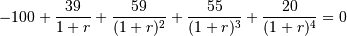
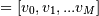
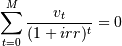

numpy.irr¶
- numpy.irr(values)[source]¶
Return the Internal Rate of Return (IRR).
This is the “average” periodically compounded rate of return that gives a net present value of 0.0; for a more complete explanation, see Notes below.
Parameters : values : array_like, shape(N,)
Input cash flows per time period. By convention, net “deposits” are negative and net “withdrawals” are positive. Thus, for example, at least the first element of values, which represents the initial investment, will typically be negative.
Returns : out : float
Internal Rate of Return for periodic input values.
Notes
The IRR is perhaps best understood through an example (illustrated using np.irr in the Examples section below). Suppose one invests 100 units and then makes the following withdrawals at regular (fixed) intervals: 39, 59, 55, 20. Assuming the ending value is 0, one’s 100 unit investment yields 173 units; however, due to the combination of compounding and the periodic withdrawals, the “average” rate of return is neither simply 0.73/4 nor (1.73)^0.25-1. Rather, it is the solution (for ) of the equation:

In general, for values , irr is the solution of the equation: [G32]

References
[G32] (1, 2) L. J. Gitman, “Principles of Managerial Finance, Brief,” 3rd ed., Addison-Wesley, 2003, pg. 348. Examples
>>> print round(np.irr([-100, 39, 59, 55, 20]), 5) 0.28095
(Compare with the Example given for numpy.lib.financial.npv)